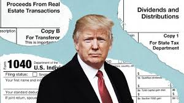

A Trump Investigation Enters a Critical Phase
New developments suggest that the long-running criminal investigation into Donald Trump and his family business has returned to its original focus. Trump's statements about the value of his assists in seeking loans.
If prosecutors conclude that Trump intentionally submitted false valuations to potential lenders, they could argue that he engaged in a pattern of fraud. Four of my colleagues — Ben Protess, William K. Rashbaum, Jonah E. Bromwich and David Enrich — write that prosecutors from the Manhattan district attorney’s office have issued new subpoenas for records about Trump’s office buildings, hotels and golf courses. The prosecutors have also questioned a banker from Deutsche Bank, which lent Trump hundreds of millions of dollars over the years. And earlier this month, they told Matthew Calamari, a Trump executive who had been under scrutiny, that they did not plan to indict him in the purported tax-evasion scheme that led to charges against Trump’s company and its chief financial officer
